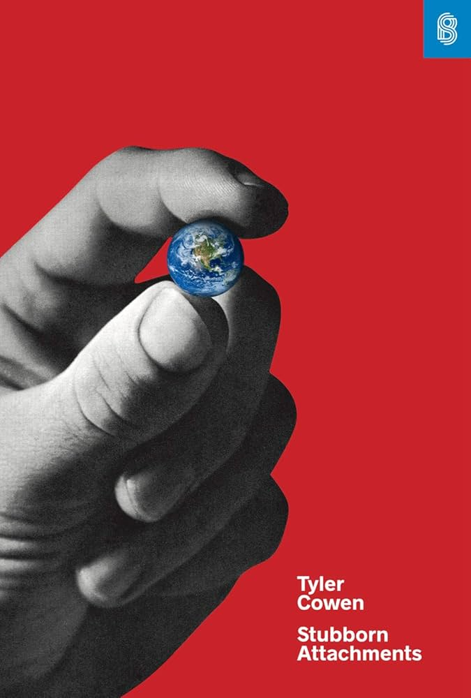

Book Review: Stubborn Attachments
7 April 2026

Ach, falling so far behind on these reviews. This is the 17th Stripe Press book I read; I finished it a few days ago, and have just finished book 18. Meanwhile, I've completed what, 3 reviews? 6 April... Q1 is over. The days are far too hot any time I leave my SF bubble (I was in hothothot Indian Creek for a week last week, which was wonderful, but more on that another time).
As for Stubborn attachments by Tyler Cowen, I misjudged this one. Cowen coined the term Great Stagnation, and also, from what I understand, is a proponent/originator of the low-hanging fruit theory of stagnation, and that's what I thought this book was going to be about. But actually, this was a more general and philosophical book about exactly *why* growth is good, and other ways to evaluate what actions to take (in other words, ethics). Therefore, I think I need a fifth category of Stripe Press book (ugh, I was getting attached to my current four), perhaps some kind of philosophy category? I can toss the other book that least fit into the other categories in there too: The Revolt of the Public, which was sitting in the history category.
It reminded me (again) of Will McAskill's What We Owe The Future a little bit, but one big plus was the long discussion on time discounting. While reading Will's book, I generally had two critiques of not having a positive discount rate: positive discounting accounts for the fact that we might not exist in the future, and make it easier to reason about what actions to take *now* (recalling what I learned from CS188). Cowen addresses both: the first is a risk discounting, which is legitimate (interest rates include risk discounting, as well as inflation and a few other forces). The latter, Cowen handles with what he calls The Overtaking Criterion, which is something of a actions tiebreaker using programmatic rules (in addition to a larger handling of "uncertainty").
Stubborn Attachments is quite compact for what it sets out to accomplish, and despite this it still manages to feel like a winding lecture rather than a lean outline. It sits at around 120 pages, much less than the typical 300 of other Stripe Press books. You can feel this acutely in the tightly packed citations in most of the footnotes.
So what is the thesis? Cowen advocates for a loose (not strict in dogma) pluralist view of ethics (many competing normative systems contribute) where focus on economic growth leaves the dogmatists satisfied and resolves questions of aggregation (who to help?) and uncertainty (which action to take?). Economic growth must be the priority because it is the only thing that properly, correctly cares about people in the future. Additionally, important exceptions exist around protecting human rights and certain rules. All of this means one ends up with an ethical system similar to "common sense morality".
That may sound a bit obvious to a Stripe Press follower, someone adjacent to Progress Studies, Abundance/YIMBY politics, etc. etc. But it leads to some counterintuitive conclusions: for example, perhaps redistribution should go towards the already rich because they will use the money more effectively (starting companies which lead to more growth), or another:
And now, the summary.
- Introduction: pluralism: right and wrong are real but complex, and humans are fallable. 6 issues: time, discounting; aggregation, resolving disagreements; rules, rule vs act utilitarianism; uncertainty, chaos theory, difficulty of calculating consequences; human rights; common sense morality, mostly caring and focusing on your personal sphere. 2 takeaways: growth is important, and we should shift who we care about (moral distance) towards the future.
- Chapter 2 (wealth and growth): Crusonia plant is a plant that keeps growing bigger, and producing more output as time goes on (aka economic growth). Wealth plus as a measure (sort of GDP + leisure + environment). Economic growth is really good, people used to be unimaginably poor; the present is relatively egalitarian and wealth does tend to trickle down to the global poor. Although self-reported happiness is flat, people strongly prefer more wealth, which probably means it makes us happier.
- Chapter 3 (resolving disagreements): growth tends to resolve disagreements by giving everyone more than they asked for (solution to Arrow's impossibility thm); even if ppl hold different normative systems. The principle of growth plus rights; rights as "side constraints". Collective action problems (like the six firing squad shooters) are a problem for utilitarianism and support a rules-based morality approach, but does not provide a problem to the "principle of growth". Growth + rights = "dual ideals of prosperity and liberty".
- Chapter 4 (time and discounting): people have a psychological preference for "now" but otherwise do not discount time (correct). Zero discount = strongly prefer economic growth. Relativity example (block of 4d space-time). But discounting for risk is justified. Assumption of persistence of prosperity has strong evidence. Importance of faith in future. Should also not discount the past, which means no "compounding interest" on addressing past wrongs. Opportunity cost argument and real-life financial discounting is a bit more complex but not relevant. However, exactly zero discounting can lead to weird decisions, so instead use overtaking criterion in Appendix A (overall: deep concern for distant future).
- Chapter 5 (redistribution): B/c we should only redistribute if it increases economic growth, do not need to follow Singerian extreme personal sacrifice. We should support the welfare state, but not to the point of disincentivizing growth. We should support immigration. Historical pessimism (the future will be awful) would be a good argument for large-scale redistribution. Redistribution obligations are collective, and so those most proximate to a need should give. Perhaps redistribution should go towards the rich, who often cause lots of growth. Relatively little should go to the elderly. Solow vs increasing returns growth models: Solow recovers quickly from negative shocks, increasing returns do not. Solow=more redistribution, increasing returns=less redistribution (b/c opportunity cost of instead going for more growth).
- Chapter 6 (uncertainty): butterfly effect of slight time delay -> different sperm of Hitler's dad -> vastly different history. This is the "epistemic problem" aka wide error bars on consequences of actions. But clearly, there are some choices with such large consequences that the choice is clear, even with high variance. Lenman D-Day example -> Principle of Roughness. Practical implications: be humble in your certainty. Uncertain consequences -> might as well follow some general, good rules -> justification for rights; hard to justify murdering a baby, even if some weird consequence is avoided, if variance is so high.
- Chapter 7 (conclusion): summary. Growth is good, protect rights, humble and forward-looking about policy. Utopian vision: society that protects liberty and has more long term thinking.
- Appendices: overtaking criterion and a note about how it's hard to factor in animal welfare (which clearly does matter, but is hard to measure how much vs human welfare). Derek Parfits repugnant conclusion makes an appearance in the second appendix.
Here are my takeaways.
- This book pretty thoroughly killed utilitarianism for me. I think everyone is a utilitarian some of the time: as the uncertainty chapter talked about, sometimes the consequences are so large and transparent that you should do the simple calculation. But the butterfly effect stuff establishing a high variance for all actions, in fact the whole chapter 6, was very convincing, more than any utility monsters or free will arguments ever were.
- Similarly, the EA-adjacent argument in favor of lifetime focus on global health (and the associated earning to give) was diminished by the redistribution chapter. I already disliked a lot of the EA AI safety arguments, and was souring on the global health arguments after reading Braben and learning about the impact of venture science, but the redistribution chapter accelerated that even more.
I need to do some research on what Cowen has done with The Great Stagnation. I've listened to interviews with him a few times, but I hear he has a blog that's basically bottomless.